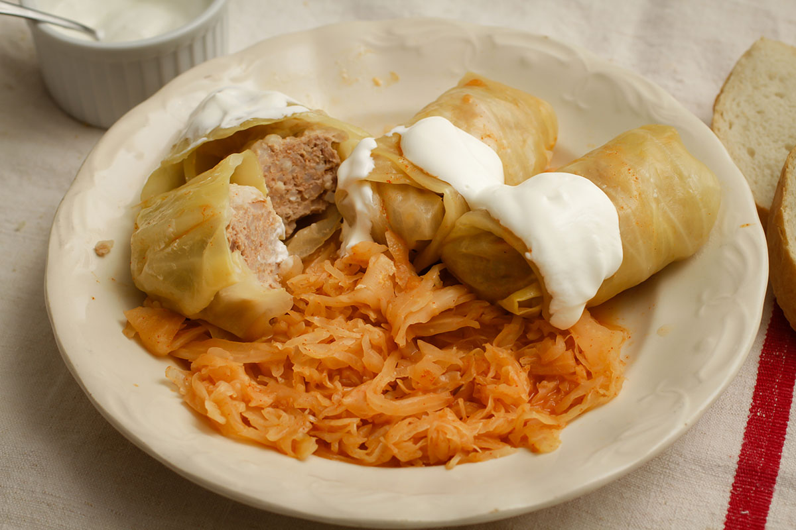
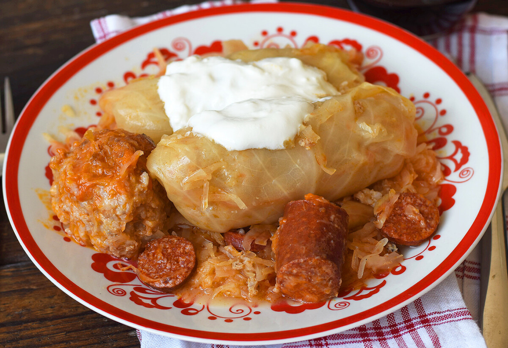
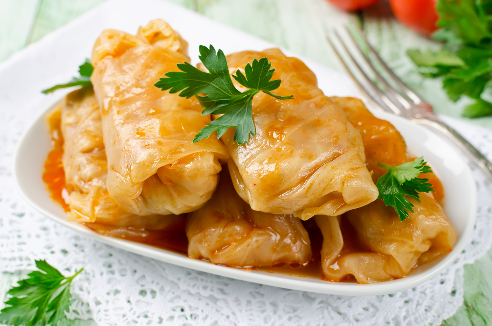

A füstölt húst előző nap beáztatjuk. (Bár erre igazából akkor van csak szükség, ha rendes, igazi házi
füstölésű árut kaptunk. A legtöbb gyorsfüstöléssel kezelt húsárúnak elég egy alapos mosás, sajnos...)
Másnap feltesszük főni. Attól függ, milyen húst kaptunk, addig főzzük, amíg félpuha lesz, kb. 1 - 1 és
1/2 órát.
A rizst félpuhára főzzük, és leszűrjük, és hagyjuk kihűlni. A savanyú káposztát mossuk át, tegyük fére.
A vöröshagymát apróra vágjuk, a szalonnát felkockázzuk.
Kis lángon kiolvaszjuk a szalonnát, a pörcöket kivesszük, és félrerakjuk. A szalonna zsírján üvegesre
pirítjuk a vöröshagymát.
A darált húst egy tálba tesszük, hozzáöntjük a rizst, a vöröshagymát, a szalonnapörcöket, a zúzott
fokhagymát, egy kávéskanál borsot, 2 kávéskanál sót és egy csapott evőkanál fűszerpaprikát.
Öntünk hozzá egy fél dl vizet, és alaposan összedolgozzuk (a víz a tojás helyett van. A tojás keményíti
a tölteléket, ha vízzel keverjük, puhább marad.)
A tölteléket elosztjuk 12 felé. Erre azért van szükség, mert így egyenlő méretű töltelékeink lesznek.
A káposztaleveleket szemügyre vesszük: ha túl kemény torzsájuk van, azt kivágjuk, vagy klopfolóval
kicsit megcsapkodjuk, hogy puha legyen, és fel tudjuk tekerni.
A tenyerünkbe veszünk egy levelet úgy, hogy a torzsa nézzen felfelé. Középre helyezünk egy tölteléket,
és először felülről, makd alulról hajtsuk rá a káposztalevelet. Takarjuk be balról is, majd a jobb
irányba kezdjük el tekerni. Így biztosan nem lesz túl szoros a töltelék, de "kivetkőzni" sem fognak.
Fogjunk egy óráis fazekat, tegyünk az aljába egy sor savanyú káposztát. Arra kerüljön egy adag töltelék,
pár darab a kolbászból és néhány nyeset füstölt oldalas.
Tegyünk rá még egy adag savanyú káposztát, tölteléket, húst és kolbászt, majd ismét takarjuk le, amíg a
hozzávalók el nem fogynak. Savanyú káposzta kerüljön felülre, és emeletenként jöhet egy-két babérlevél.
Öntünk rá annyit az oldalas fővővizéből, hogy ellepje.
Közepes lángon főzzük jó 2 órán keresztül.
Ha kész, hagyjuk kicsit hűlni. Utána szétszedjünk - óvatosan kipiszkáljuk belőle a töltelékeket,
vigyázva, hogy ki ne essenek a káposztalevélből. Félretesszük.
A zsírt megolvasztjuk, szórunk rá pirospaprikát és egy evőkanál lisztet. Vízzel felengedjük, olyan
sűrűnek kell lennie, mint a tejfölnek. Rácsorgatjuk az aprókáposztára, elkeverjük, és berántjuk.
Tálaláskor alulra tesszük az aprókáposztát, rá a tölteléket, mellé az oldalast és a kolbászt.
Tejföllel koronázzuk, és friss házi kenyeret kínálunk mellé.

Töltött káposzta

Töltött káposzta

Töltött káposzta